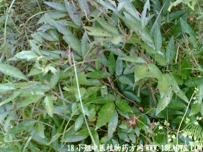

(本文解释权归中药材天地网兄弟站-中药大全-中医植物药方网所有,如需转载请注明出处)

别名：饿蜞乸、山蜞乸。
植物名：小槐花。
生长环境：本品为灌木。山地、山坡和林边均有生长。
分布：印度、缅甸、马来西亚、日本；我国东南、西南及南部各省均有分布。
入药部分：叶。
采集期：夏、秋。
自采地点：山岗。
性味：性凉、味淡。
功能清热、凉血、散瘀。
主治、用量和用法：1、痢疾下血：干用1至2两，清水煎服；2、癍痧发热，配伍用。
验方：（治癍痧发热方）三把苓1两、蛇泡簕5钱、鸭脚树皮5钱、岗梅根5钱、金盏银盘5钱、清水四碗、煎成一碗服。
（方解）癍痧发热为外邪传力之症，宜用解表清里法。本方三把苓、蛇泡簕清在里之热；鸭脚树皮、金盏银盘散在表之邪，岗梅根生津清热，以救热感伤津之醉。
（方歌）癍痧发热三把苓，蛇泡岗梅鸭脚呈，金盏银盘同煎服，清里解表法当承。
附录：（根）治痢疾：干根1至2两，清水煎服。